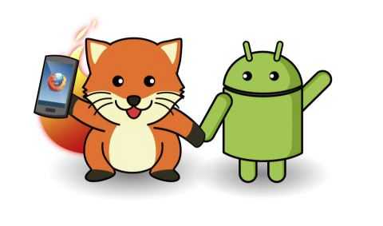

Firefox OS es el único sistema operativo móvil completamente abierto basado en estándares web
Está pensado para mercados que no tengan acceso a los sistemas operativos líderes actuales
Está basado completamanete en la Web, no hay una capa nativa. Tanto el sistema operativo como las aplicaciones estás escritas en HTML5. El acceso al hardware ocurre a través de un núcleo Linux que es el mismo que utiliza Android
HTML5 es un ciudadano de primera clase en Firefox OS, es el único SO que mantiene la promesa que otros dieron años atrás (No se necesita SDK)
Todo lo que necesitas saber para crear una aplicación para Firefox OS es conocer HTML5
Firefox OS es una realidad, tenemos teléfonos vendidos en España, Polonia, Venezuela y Colombia
Firefox OS
La plataforma móvil que HTML5 merece
Soporte del navegador predecible
Un nuevo mercado
Mejorando el mundo móvil
Enfocado a mercados emergentes y nuevos
Hardware muy accesible
No se necesita tarjeta de crédito, se paga con la factura
Tecnologías web por todos lados
18 telefónicas asociadas, 4 fabricantes asociados
Todo lo que forma parte del SO es tecnología web abierta y propuesto para estándar
Las aplicaciones de Firefox OS son aplicaciones de HTML5 con un archivo extra de manifiesto
El manifiesto define el acceso al hardware que necesitas, los íconos y la ubicación del código
Están resguardados por un modelo de seguridad de tres capas, permitiendo más o menos acceso dependiendo de la ubicación de la aplicación (alojada vs. enviada desde el marketplace)
Funcionan cuando no tienes conexión y funcionan a través de otras plataformas (cuando se preparan para eso)
Puedes encontrarlas e instalarlas desde la web o desde el marketplace
Definido en el manifiesto
{ "name": "Mi Aplicación", "description": "La descripción del uso", "launch_path": "/", "icons": { "128": "/img/icon-128.png" }, "developer": { "name": "Tu nombre u organización", "url": "http://your-homepage-here.org" }}
var installapp = navigator.mozApps.install(manifestURL);installapp.onsuccess = function(data) { // La aplicación está instalada};installapp.onerror = function() { // La aplicación no está instalada, la información está en // installapp.error.name};
Una especificación abierta para acceder al hardware de los dispositivos
Creadas con y enviadas a los estándares y otros desarrolladores de navegadores
Una forma de interactuar a través de JavaScript con el dispositivo
A través de eventos - cada acceso tiene un manejador de éxito o fracaso con un informe completo para saber qué salió mal
Protegido con un modelo de seguridad de tres capas que permite mayor o menor acceso dependiendo de la ubicación de la aplicación (alojada vs. brindada por el marketplace)
Una propuesta para tener acceso al hardware manteniendo al usuario con el control en lugar de autentificar en su nombre
Comparabl e a Android Intents, pero con un horizonte más limitado que tiene más sentido en la web
Una técnica para crear un ecosistema de aplicaciones en el dispositivo, las aplicaciones pueden registrarse como con la posibilidad de brindar ciertas tareas y otras aplicaciones pueden usarlas
Una forma simpre de acceder al hardware e información sin tener que empaquetar tu aplicación y enviarla al marketplace
Muy seguro ya que no sucede nada sin que el usuario lo inicie
new, p.e type: “websms/sms” o “webcontacts/contact”
Enviar un número al teléfono
var call = new MozActivity({ name: "dial", data: { number: "+1804100100" }});
Obtener una imagen del teléfono (1/2)
var getphoto = new MozActivity({ name: "pick", data: { type: ["image/png", "image/jpg", "image/jpeg"] }});
Obtener una imagen del teléfono (2/2)
getphoto.onsuccess = function () { var img = document.createElement("img"); if (this.result.blob.type.indexOf("image") != -1) { img.src = window.URL.createObjectURL(this.result.blob); }};getphoto.onerror = function () { // error};
Activities y aplicaciones alojadas en Android

Búsqueda dinámica de aplicaciones
Búsqueda dinámica de aplicaciones
La interfaz de búsqeuda de Firefox OS no solo busca nombres de aplicaciones o contenido en tu dispositivo
También busca coincidencias con aplicaciones por temática.
Por ejemplo, puedes escribir el título de una película y encontrarás aplicaciones relacionadas con películas
Estos resultados de aplicaciones están preparados para diferentes mercados, lo que significa que no encontrarás Netflix entre las opciones, si no está dispoinble en tu país.
Búsqueda dinámica de aplicaciones para el usuario
Los usuarios no necesitan saber el nombre de la aplicación, si no que realizan la búsqeuda por lo que les interesa
Las aplicaciones son realmente "probar antes de comprar": al hacer clic en uno de los resultados de la lista abrirá la versión preparada para dispositivos móviles de la aplicación. Sin necesidad de descargar, instalar o desinstalar.
Una vez que el usuario está contento con la aplicación, pueden hacer un clic largo para instalarla y obtener todos los beneficios de una aplicación de la web abierta
El usuario puede usar la aplicación una sola vez, sin que queden registros en el dispositivo
Búsqueda dinámica de aplicaciones para desarrolladores
Tu aplicación se encontrará por lo que haga, no por el nombre o la publicidad cara que puedas haber puesto en ella.
La versión en HTML5 de tu aplicación es tu publicidad, nada se desperdicia
Encuentras usuarios rápidamente que prueban la aplicación sin tener que descargarla ni instalarla
Puedes convertirte en la aplicación local más importante de una temática, sin tener que competir con otros en mercados cerrados
Caso de uso a aplicación
Caso de uso a aplicación
Herramientas
Herramientas para Firefox OS / HTML5
Al contrario de iOS y Android, no hay un SDK o conjunto de IDEs/herramientas para Firefox OS.
Las aplicaciones de Firefox OS son aplicaciones de HTML5, y nunca tendremos un conjunto de herramientas definitivas para escribir HTML
Dicho esto, hay algunas cosas que harán tu vida más fácil y que te permitirán empezar más rápidamente
Muchas de ellas vienen con el navegador, o como complementos del navegador. De esa forma podrás usar la computadora con la que te sientes cómodo para desarrollar el código
No necesitas un un dispositivo con Firefox OS para empezar, posiblemente necesites uno para probar la interacción y el rendimiento
Esto es algo que evoluciona, más herramientas están en camino
Herramientas para Firefox OS / HTML5
Mozilla tiene algunas cosas en el espacio de las herramientas
Asegurate de mostrar las herramientas de desarrollo que se encuentran en Firefox (NO, y repito, NO Firebug) y la vista de modo adaptable que permite cambiar el tamaño del navegador al tamaño del teléfono
Muestra el simulador funcionando, cambai alguno de los CSS para mostrar que las aplicaciones son solo sitios web
Asegurate de comentar que los componentes del SO son para Gaia, no para cualquier aplicación externa.
Escribe tu código como harías normalmente con JSFiddle
Agrega /webapp.manifest a la URL del Fiddle y pega el enlace en el simulador de Firefox OS para instalar la aplicación
También puedes agregar /fxos.html a la URL del Fiddle para obtener una página de instalación como tendrías con una típica aplicación alojada de Firefox OS
https://marketplace.firefox.com/developers/ - el centro de información para desarrolladores del marketplace, mucha información sobre cómo diseñar una aplicación, aplicaciones de demostración para descargar e información de cómo enviar tu aplicación.
 {Nombre}, {Apellido}, {Conferencia}, {Lugar}, {fecha}
{Nombre}, {Apellido}, {Conferencia}, {Lugar}, {fecha}